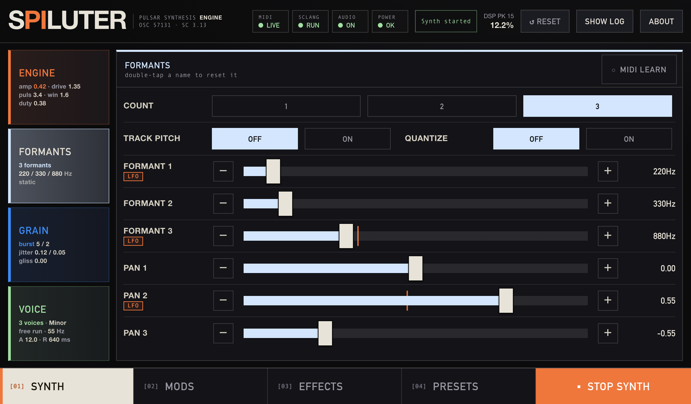
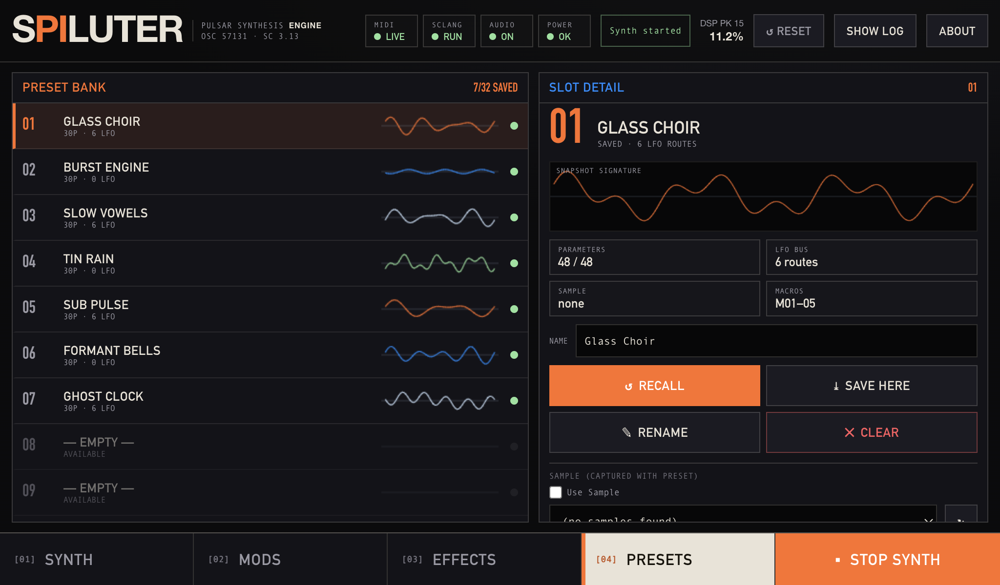

How to use it.
Everything in the project's README, rewritten as a player's manual: what is on each screen, how to set up modulation and effects, how MIDI works, how to install it, and what to do when something is not right.
The basics
When Spiluter starts it checks that its sound engine is present, starts it, starts the synth, and then shows the Synth screen. On a Raspberry Pi all of that happens by itself when you switch on.
The bar along the bottom
- Synth, Mods, Effects, Presets switch between the four screens.
- The large button on the right starts the synth, or stops it while it is running.
The row along the top
- Status chips.
MIDIshows whether a controller is connected,SCLANGandAUDIOshow that the sound engine is running and producing sound, andPOWERshows whether the Pi is getting enough power. Green means healthy. - Status message. What the engine is doing right now, for example "Synth started".
- DSP. How hard the sound engine is working, as a percentage. The small number in its label is the recent peak. It turns amber when the peak passes 60% and orange when it passes 80%.
- Reset returns every control to its starting value. Log opens a list of engine messages, useful when something goes wrong. About gives a short description and credits.
The Synth screen
Every control that shapes the sound itself lives here. Nothing scrolls, and every control is sized for a fingertip.

Finding your way
- Four sections down the left: Engine, Formants, Grain and Voice. Tap one to open it on the right. Each tab also shows a short summary of its most important values, so you can read the whole patch without opening every section.
- The instrument remembers which section you had open.
Changing a value
- Drag the fader for big moves.
- Tap − or + for small, exact steps. Hold either one down and it repeats.
- Double-tap a control's name to send it back to its default. The row flashes to confirm.
- Switches are rows of buttons: tap the option you want. Chord is a two-row grid of buttons.
Why some controls are greyed out
Controls that would have no effect right now are dimmed or hidden, so what you see is what matters:
- Burst On and Burst Off appear only when Mask Mode is Burst.
- Mask Amount works only when Mask Mode is Stochastic. Per-Formant works only when a mask is on.
- Formant 2 and 3 and Pan 2 and 3 are dimmed when the formant Count is lower than their number.
- Duty is dimmed when Duty Mode is Formant, because the formant sets it.
- Chord is dimmed when there is only one voice.
The three previews
The Engine section draws the pulsaret, the window and the duty across its top. They follow your settings, and they move when an LFO is driving one of them.
Seeing what an LFO is doing
A control that an LFO is driving shows a small orange LFO tag under its name, and a moving orange mark on its fader at the value the LFO has pushed it to. Your own setting stays where you left it. Tap the tag to jump to that LFO on the Mods screen.
Quantized formants
Formants set freely can clash with each other. Quantize, in the Formants section, locks Formants 2 and 3 to musical intervals of Formant 1.
- With Quantize on, the Formant 2 and 3 faders are replaced by Interval rows with fourteen choices:
1/23/41/16/55/44/33/25/32/15/23/14/15/16/1. For example3/2is a fifth above Formant 1 and2/1is an octave above. Each row shows the frequency that results. - Formant 1 now carries the other two. Move it by hand, with an LFO, from MIDI or from a preset, and the others follow.
- Switching never jumps the sound. Turning Quantize on picks the interval nearest to where each formant already was. Turning it off leaves the faders at the quantized frequencies.
- An LFO aimed at Formant 2 or 3 still works when quantized. It becomes a detune around the interval.
- Formants top out at 8 kHz, so a high interval on a high Formant 1 stops rising there.
MIDI learn
- Tap MIDI learn at the top of the section. Each row now shows which controller number it answers to.
- Tap the name of the control you want. It reads "waiting for CC…".
- Move a knob or fader on your controller (set to MIDI channel 1). It is now assigned.
- Tap MIDI learn again to finish.
- If that knob was already assigned to something else, it moves to the new control.
- Tap a
CC n ×tag to remove an assignment. - Assignments are kept between sessions and work for every control, switches included: a knob sweeps through a switch's options.
- The Interval rows share the knob of their formant. One knob moves Formant 2's frequency when Quantize is off and steps through its intervals when it is on.
The Mods screen
Sixteen LFOs, each of which can move one control automatically. The screen is split in two so that watching and editing never get in each other's way.

Monitor, on the left
- All sixteen LFOs are listed. Each row shows its target, shape and speed, and a small meter of what it is putting out at this moment.
- Tap a row's number to run or stop that LFO. Tap the rest of the row to select it for editing.
- Scope, in the corner, shows or hides a drawing of the last four seconds of every running LFO, with the selected one highlighted. When MIDI clock is present it also draws beat and bar lines.
- The line at the bottom shows the selected LFO's target as the engine hears it: your setting, the value right now, how much this LFO is adding, and the total from every LFO on that target.
What you see here is reported by the sound engine itself, so it is the modulation that is really happening.
Editor, on the right
- ‹ and › step through the LFOs. The Running / Off button turns the selected one on.
- Source sets the movement: one of seven shapes (sine, triangle, saw up, saw down, square, sample-and-hold, smooth random), and either a free Rate or a MIDI clock division.
- Destination sets what it moves and how far: a Target and a Depth. Negative depth turns the shape upside down. The note under the fader tells you what the depth means in the target's own units.
- Tap a section's heading to fold it away. The heading still shows a summary.
What an LFO can move
Amplitude, Drive, Pulsaret, Window, Duty, Formants 1 to 3, Mask Amount, Pans 1 to 3, Amp Jitter, Timing Jitter, Glisson, Base Pitch, Attack, Release, Glide and Sample Rate. From the effects: Reverb Mix, Reverb Decay, Delay Mix, Delay Feedback and Delay Clock Ratio. And four switches: Chord, Mask Mode, Interval 2 and Interval 3.
- Switch targets move in steps. The depth is a number of options up or down the list. A square or sample-and-hold LFO on Chord flips between two chords; an LFO on Delay Clock Ratio always lands on a proper ratio.
- An LFO on Reverb Mix or Delay Mix can open the effect even if you left its Mix fader at zero.
Free rate
With MIDI clock off, the Rate fader runs from one cycle every hundred seconds (0.01 Hz) to twenty cycles a second (20 Hz). Most of the fader's travel is given to the slow, musical end: the lower three quarters cover everything up to about 3 Hz.
Locking to MIDI clock
Turn on MIDI clock for an LFO and it follows the tempo of whatever is sending clock.
- The fader now chooses a division.
/4makes one cycle every four beats and lands on the same beat of every bar.x2makes two cycles per beat. - Start on your clock source puts every locked LFO on the downbeat. Continue picks up where it stopped.
- Run waits for the beat. Press Run while the clock is ticking and the LFO holds off until the next whole beat. Its number and the Running button pulse and read "On next beat" while it waits. Stop is always immediate.
- Sample-and-hold steps land on the grid too.
- The tempo is shown at the top of the Monitor and on the Effects screen. A few seconds after the clock stops it reads "stopped" and the last tempo is held, so a synced delay does not jump.
- Until the instrument has heard enough clock to work out a tempo (a fraction of a beat), a locked LFO runs at its free rate.
Restarting LFOs with each note
When Gate Mode is MIDI-like, every note you play restarts the running LFOs, so each note gets the same movement from its beginning.
The Effects screen
A reverb and a four-tap delay. Both come after the synth, so tails and echoes keep ringing after a note has ended. Effect settings are saved in presets like everything else.

Reverb controls
| Control | Range | Starts at | What it does |
|---|---|---|---|
| Mix | 0 – 1 | 0 | How much reverb you hear against the dry sound. At 0 the reverb is off. |
| Decay | 0 – 0.95 | 0.6 | How long the tail lasts. It is limited so that it can never run away. |
| Diffusion | 0 – 1 | 0.7 | Density. Low gives separate early echoes, high gives a smooth wash. |
| Damping | 0 – 1 | 0.5 | How quickly the highs die away. Higher is darker. |
| Shimmer | 0 – 1 | 0 | Feeds an octave-up copy into the tail for the rising "shimmer" bloom. |
| Movement | 0 – 1 | 0.3 | Gentle motion inside the tail. Stops it sounding metallic; more gives a chorused tail. |
| Pre-delay | 0 – 250 ms | 0 | A gap before the reverb begins, which keeps the start of each note clear. |
| Low Cut | 20 – 1000 Hz | 20 | Removes low frequencies from the reverb only, to stop it muddying the bass. |
Dialling in a reverb
- Raise Mix to about 0.2 to 0.4.
- Set Decay for length: around 0.3 for a room, around 0.85 for a long wash.
- Set Diffusion for density: low for distinct reflections, high for a smooth smear.
- Raise Damping to darken long tails and keep them from turning harsh.
- Raise Low Cut to 150 to 300 Hz if the low end gets muddy.
- Add Pre-delay to separate the dry attack from the tail.
- Leave Movement near 0.3, or raise it for a more chorused tail.
- Bring Shimmer up slowly, with a longer Decay, for the octave bloom.
Decay 0.85 · Diffusion 0.8 · Damping 0.4 · Movement 0.4 · Shimmer 0.3 · Low Cut 200 Hz · Mix 0.35
Delay controls
| Control | Range | Starts at | What it does |
|---|---|---|---|
| Mix | 0 – 1 | 0 | How much delay you hear. At 0 the delay is silent. |
| Feedback | 0 – 0.88 | 0.35 | How many times the echo pattern repeats. Each repeat is a little darker. It is limited so it cannot run away. |
| Tap Spread | 0 – 1 | 0.45 | Fans the four echoes apart. At 0 they land together as one echo; at 1 the last one arrives at about two and a half times the base time. |
| Base Time | 20 – 2000 ms | 320 | The delay time when Sync is set to Free ms. |
| Sync | Free ms / MIDI Clock | Free ms | Set the time by hand, or lock it to incoming MIDI clock. |
| Clock Ratio | /16 … x16 | x1 | The delay time as a fraction or multiple of one beat when Sync is MIDI Clock. |
Dialling in a delay
- Raise Mix to bring the echoes in.
- Choose Sync. Free ms lets you set Base Time by hand, independent of tempo. MIDI Clock locks the delay to your clock source; Base Time is switched off and Clock Ratio takes over.
- In MIDI Clock mode, pick a Clock Ratio.
x1is one beat./Nmakes the delay longer and slower;xNmakes it shorter and faster. Besides whole numbers up to 16 each way there are 1.3, 1.5, 1.75 and 2.5 for dotted and triplet-like feels. - Use Tap Spread to turn one echo into a pattern of four. In MIDI Clock mode the echoes snap onto clock divisions, so the pattern stays on the grid.
- Set Feedback for length: low for a couple of slaps, high for long trails. The whole four-echo pattern repeats as a group.
Sync MIDI Clock · Clock Ratio x4 (four echoes per beat) · Tap Spread 0.6 · Feedback 0.45 · Mix 0.3
When both Mix faders are at 0 the effects are switched off completely and use no processing power.
Presets and samples

Presets
There are thirty-two slots. A preset stores every control on the Synth and Effects screens, all sixteen LFOs, and the sample in use.
- Tap a slot in the bank on the left to select it.
- Recall loads it. Save Here stores the current sound in it.
- Rename gives it the name typed in the Name box. Clear empties the slot.
Using your own samples
A sample can take the place of the built-in waveform as the particle the sound is made from.
- Put audio files in the samples folder. On the Pi this is
/spaluter/samples/, which is meant to be a USB stick. You can type a different folder into the box. - Tap ↻ to refresh the list, choose a file, and tap Load.
- Tick Use Sample.
- Rate plays the sample slower or faster, from a quarter speed to four times.
MIDI
Notes
Playing a note sets the pitch and opens the sound; releasing it lets the sound go. How the instrument responds depends on Gate Mode in the Voice section, and playing notes never changes that setting for you:
- MIDI-like: sound while a note is held, like a keyboard synth. Each new note also restarts the running LFOs.
- Free Run: the sound runs continuously as a drone.
- CV-like: the sound is fired by triggers.
Knobs and faders
Controllers are read on MIDI channel 1. Every control has a controller number (CC) assigned out of the box, listed below. Change any of them with MIDI learn.
| Control | CC | What it does |
|---|---|---|
| Engine | ||
| Amplitude | 7 | Overall volume. |
| Drive Gain | 71 | Pushes the sound harder for grit and saturation. |
| Pulsaret | 20 | Blends through the ten particle waveforms. |
| Window | 21 | Blends through the nine particle envelopes, soft to sharp. |
| Duty | 22 | How much of each pulse is sound, how much silence. |
| Duty Mode | 23 | Manual duty, or let the formant set it. |
| Formants | ||
| Count | 24 | One, two or three formants. |
| Track Pitch | 25 | Formants follow the notes you play, on or off. |
| Quantize | 63 | Lock formants 2 and 3 to intervals of formant 1. |
| Formant 1 | 26 | Frequency of the first resonance. |
| Formant 2 / Interval 2 | 27 | Second resonance; steps through intervals when quantized. |
| Formant 3 / Interval 3 | 28 | Third resonance; steps through intervals when quantized. |
| Pan 1 | 29 | Left-right position of formant 1. |
| Pan 2 | 30 | Left-right position of formant 2. |
| Pan 3 | 31 | Left-right position of formant 3. |
| Grain | ||
| Mask Mode | 32 | Off, random (Stochastic) or patterned (Burst). |
| Per-Formant | 33 | Mask each formant separately, on or off. |
| Mask Amount | 34 | How many pulses the random mask drops. |
| Amp Jitter | 35 | Random loudness from pulse to pulse. |
| Timing Jitter | 36 | Random early or late timing of each pulse. |
| Glisson | 37 | Pitch bend inside every pulse, down or up. |
| Burst On | 38 | Pulses that sound in each burst. |
| Burst Off | 39 | Pulses left silent after each burst. |
| Voice | ||
| Gate Mode | 40 | Held notes, free-running drone, or triggers. |
| Voices | 41 | One to four voices. |
| Chord | 42 | The chord the voices are stacked into. |
| Base Pitch | 43 | The pulse rate: rhythm when low, pitch when higher. |
| Attack | 44 | Fade-in time of a note. |
| Release | 45 | Fade-out time of a note. |
| Glide | 46 | Slide time between pitches. |
| Sample | ||
| Use Sample | 47 | Use the loaded sample as the particle, on or off. |
| Sample Rate | 48 | Playback speed of the sample. |
| Reverb | ||
| Mix | 49 | Amount of reverb. |
| Decay | 50 | Length of the tail. |
| Damping | 51 | Darkens the tail. |
| Diffusion | 52 | Density, from separate echoes to a smooth wash. |
| Movement | 53 | Motion inside the tail. |
| Pre-delay | 54 | Gap before the reverb begins. |
| Low Cut | 55 | Removes lows from the reverb. |
| Shimmer | 56 | Octave-up bloom in the tail. |
| Delay | ||
| Mix | 57 | Amount of delay. |
| Feedback | 58 | How long the echoes repeat. |
| Tap Spread | 59 | Spacing of the four echoes. |
| Base Time | 60 | Delay time in Free ms mode. |
| Sync | 61 | Free time or locked to MIDI clock. |
| Clock Ratio | 62 | Delay time as a fraction or multiple of a beat. |
Clock
Send MIDI clock from a drum machine, sequencer or computer and the instrument reads the tempo. LFOs with MIDI clock turned on, and the delay with Sync set to MIDI Clock, then follow it. Start, Continue and Stop from the clock source are followed as well.
Installing
Spiluter runs on a Raspberry Pi 4, on macOS, on Windows and on Linux. It uses SuperCollider, a free audio program, as its sound engine. If SuperCollider is missing, Spiluter tries to install it for you on first start, and your computer may ask for an administrator password.
On a Raspberry Pi
- Build the instrument as described on the Hardware page, with Patchbox OS on the card.
- Install the Spiluter package for Raspberry Pi (the file ending in
linux-arm64.deb). - The installer does the rest: it fetches what the instrument needs, tunes the audio system for low delay and steady timing, and keeps the Pi's own headphone and HDMI sound outputs out of the way so the pisound is the only one in use.
- Restart. The instrument starts by itself.
If the automatic setup did not complete, you can run it again from a terminal on the Pi:
sudo /usr/local/bin/spaluter-rpi-setup --forceOn a Mac or a Windows PC
- macOS: there are installers for both Apple Silicon and Intel Macs.
- Windows: run the installer and follow the prompts.
- Start Spiluter like any other application. It finds SuperCollider, or offers to install it (using Homebrew on a Mac and winget on Windows).
Running it from the project files
If you have the project itself rather than an installer, you need Node.js version 18 or newer. In the project folder:
npm install
npm startMaking the installers yourself
These commands build the installers into the installers folder:
npm run build:mac # macOS, Intel and Apple Silicon
npm run build:win # Windows
npm run build:pi # Raspberry Pi
npm run build:installers # all threeLooking after a Pi
The installer sets the Pi up for clean, steady audio. You should not need to change anything, but these checks tell you whether all is well.
While you play
- Watch the DSP reading. With the default sound it sits around 10%. Amber means the peak has passed 60%, orange 80%: use fewer voices or formants if you hear dropouts.
- Keep the POWER chip green. A weak power supply causes crackle that no setting will remove. Use a dedicated 5.1 V, 3 A supply.
If you hear clicks or crackle
- Check power first. In a terminal on the Pi,
vcgencmd get_throttledshould answer0x0. Anything else means the Pi has been short of power. - Check the DSP reading. If it is high, lighten the patch.
- Record what the Pi is sending out, with the command below. If the recording is clean but you still hear the noise, the cause is after the Pi: power, a cable, or the equipment it is plugged into.
pw-record --target alsa_output.platform-soc_sound.stereo-fallback -P '{ stream.capture.sink = true }' out.wavMeasuring a session
For a full report on how the Pi is coping, run this from another computer while you play for five minutes with the screen on. The number is the length in seconds.
spaluter-measure 300The report is saved in ~/.local/state/spaluter/. The instrument also writes a line about its own workload every fifteen seconds to the Log and to start.log in that same folder.
Troubleshooting
The app opens but there is no sound and the synth never starts
Tap Log and look for the words Failed to launch sclang. That means SuperCollider could not be found.
Make sure SuperCollider is installed. If it is installed somewhere unusual, tell Spiluter where, by starting it from a terminal like this.
macOS or Linux:
SCLANG_PATH=/absolute/path/to/sclang npm startWindows (PowerShell):
$env:SCLANG_PATH="C:\Path\to\sclang.exe"; npm startThe Log says "Server 'localhost' exited" just after starting
This is nearly always a disagreement between the sound engine and your audio output, usually about sample rate.
Open SuperCollider on its own and check that it can start with your current output device. On a Mac, open Audio MIDI Setup and make sure the output device's sample rate is the one you expect.
My controller does nothing
Check the MIDI chip at the top. If it is not green, the controller is not being seen: check the cable and that the controller is switched on.
If it is green, make sure the controller sends on MIDI channel 1, and that its knobs send the controller numbers in the table above, or assign them with MIDI learn.
A clock-synced LFO or delay is not following the tempo
Look at the tempo readout at the top of the Mods Monitor or on the Effects screen. If it says no clock is detected, your clock source is not sending MIDI clock to the instrument. Until a tempo is known, synced LFOs run at their free rate and the delay uses its last tempo.
Crackle or clicks on the Raspberry Pi
See Looking after a Pi. Start with the power supply.
The Pi did not finish setting itself up
Run the setup again, then restart:
sudo /usr/local/bin/spaluter-rpi-setup --forceTo re-run only the checks the instrument makes each time it starts:
/usr/local/bin/spaluter-linux-startup